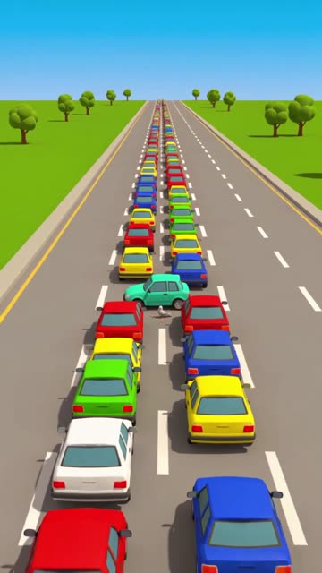

EP 03 new
what if a pigeon learned to drive?
shot 1 Low-poly 3D animation, bright flat colors. A grey pigeon sits in the driver's seat of a small car, wings on the steering wheel, looking very serious. Fixed camera through the windshield. Vertical 9:16. shot 2 Low-poly 3D animation, bright flat colors. A grey pigeon in a tiny car gets a driving license handed to it by a stunned examiner holding a clipboard. Medium shot. Vertical 9:16. shot 3 Low-poly 3D animation, bright flat colors. A small car stopped in the middle of a highway, a pigeon on the road eating bread crumbs, a long line of honking cars behind. Aerial shot. Vertical 9:16.